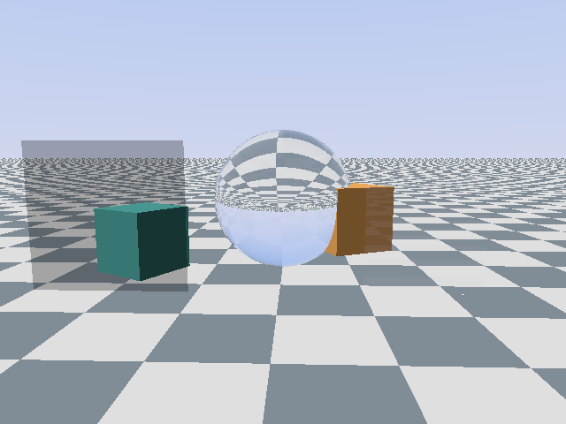

meshes rasterized beside hologram's ray tracer, composited by depth
The other half of hologram. hologram draws the things light has to be exactly right on, like glass and mirrors; gerridae draws everything else, like rooms and furniture, and the two pictures are combined pixel by pixel.
Meshes rasterized beside hologram’s ray tracer and composited by depth. hologram traces what light has to be right on, glass, mirrors, gratings, polarizers and lamps, and gerridae draws everything else.
hologram traces what light has to be right on. gerridae draws everything else: the room, the furniture and anything that moves. The two meet per pixel, by depth.

The cubes are rasterized; the floor, the ball, the pane and the polarizer are traced. The teal cube shows through the polarizer at half, by Malus. The orange cube shows through the thin pane at 96%, by Fresnel. Inside the ball it vanishes, because a ray the glass has bent has left the eye's line, and the raster has no image along it.
Two programs draw every frame. gerridae paints the ordinary things first: walls, furniture, anything that moves. For every pixel it also notes how far away the thing it painted is.
Then hologram sends its light rays out through the same pixels. If a ray meets glass, a mirror or a polarizing filter before it reaches the painted object, hologram draws what that light really does. If not, the pixel keeps gerridae's colour, dimmed or tinted by whatever the ray passed through on the way.
That is why the cube behind the glass pane shows through slightly dimmer, and the cube behind the polarizer at half brightness, with no special case for either.
How we know it's right. hologram keeps a second, slow, careful copy of itself on the computer's main processor, and that copy is held to textbook physics. Every frame is compared with it pixel by pixel. This one matches to within about a tenth of one brightness step out of 255.
gerridae draws first, into a floating-point target the size of the framebuffer: linear radiance in rgb, and in alpha the path length from the eye to the surface it drew. hologram's tracer reads that per pixel as a cap and stops every ray still on the eye's line at it. If something traced is nearer, the tracer shades it as always. If not, the pixel takes the raster's colour, times whatever the ray picked up on the way.
"Still on the eye's line" is the primary ray and anything that carried on without turning: through a polarizer, a waveplate or a thin glass pane. So a mesh behind a pane shows through it by Fresnel, and behind a polarizer it obeys Malus, with no extra pass.
hologram's oracle reads the raster target back, hands it to the CPU tracer as per-pixel caps, and compares the whole presented frame at hologram's usual bars. That checks every traced pixel, every pixel the raster won, and the pane and polarizer arithmetic on the way. An oracle that ignores the caps fails the same frame, which is what makes the pass mean something.
m1_composite --diff DIFF OK, mean 0.1042/255, 0.067% off
m1_composite --diff --spectral DIFF OK, mean 0.0351/255, 0.139% offIt is at the first. The rest are planned.
Nothing uses it yet. These two games are planned to move onto it.
A mesh rasterizer for hologram by magmacrunch media. C99 on sokol, compiled from source into a game the way hologram is. It runs on D3D11 today; GLSL and Metal wait on hologram's tracers in those dialects learning caps.
Gerridae are the water striders, which stand on a surface without breaking it. Also the working title of a Texas Hold'Em Lava Dome track, "Rendezvous at 44i boo", published by magmacrunch music.
PolyForm Noncommercial 1.0.0 · Copyright 2026 magmacrunch media.
gerridae is developed in-house and is not publicly distributed.
For source access, licensing, or anything else, email info@magmacrunch.com.